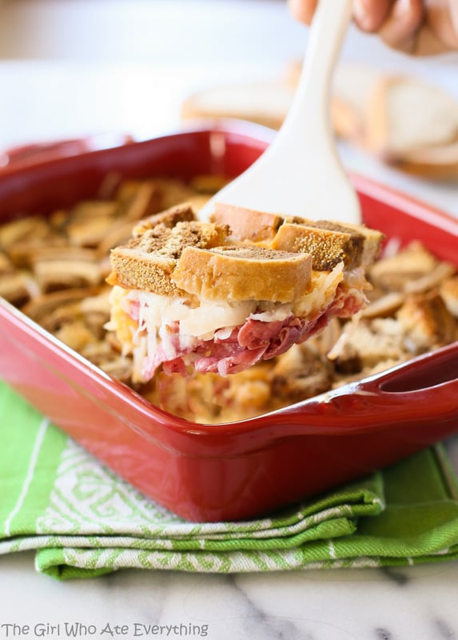

Reuben Casserole

Reuben Casserole is a hearty and flavorful dish that is perfect for a cold winter day. It is made with layers of rye bread, corned beef, sauerkraut, and Swiss cheese.
Ingredients
- 6 slices rye bread, cubed
- 1 pound thinly sliced corned beef, cut into bite-siezd pieces
- 1 (16 ounce) can sauerkraut, drained and rinsed
- 1 (10 ounce) jar Thousand Island dressing
- 2 cups shredded Swiss cheese
Steps
- Preheat the oven to 350 degrees F (175 degrees C). Grease a 9x13 inch baking dish.
- In a large bowl, combine the rye bread cubes, corned beef, sauerkraut and Thousand Island dressing. Mix well.
- Pour the mixture in to the prepared baking dish.
- Top with the shredded Swiss cheese.
- Bake for 20-25 minutes, or until the cheese is melted and bubbly.
- Let the casserole cool for 10 minutes before serving